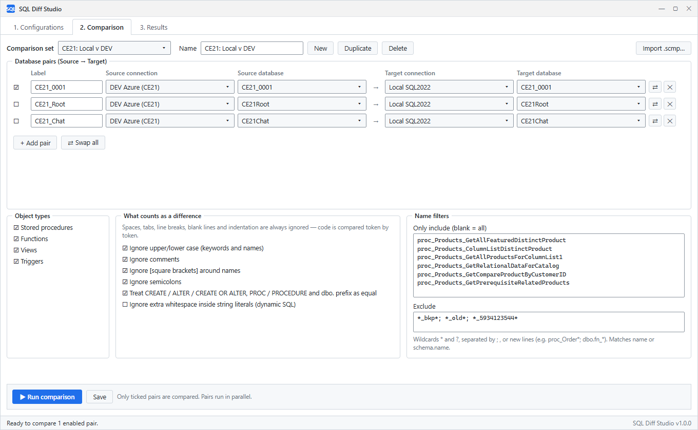

Overview & Core Concepts

Centralized control panel displaying active database environments, recent deployments, and safety posture.
1. What SQL Diff Studio Does
SQL Diff Studio is a centralized database change governance and comparison platform built for engineering teams, DBA specialists, and DevOps administrators working with Microsoft SQL Server and Azure SQL. It eliminates dangerous manual script execution in SQL Server Management Studio (SSMS) by enforcing automated AST syntax validation, side-by-side diffing, AI-assisted query optimization, and instant 1-click rollback snapshots.
2. The 3 Core Tenets
- Zero Blind Deployments: Every statement is parsed through Microsoft's official T-SQL Abstract Syntax Tree (AST) engine to verify additions and block accidental schema wipes.
- Live AI Performance Tuning: Detect non-SARGable column operations (like
YEAR(CreatedDate)orISNULL()wrappers) and obtain real-time query rewrite suggestions from local or cloud LLMs. - Guaranteed Recovery: Prior to applying any change, an immutable pre-change DDL snapshot is stored with a SHA-256 hash in a local vault, enabling 1-click disaster recovery.